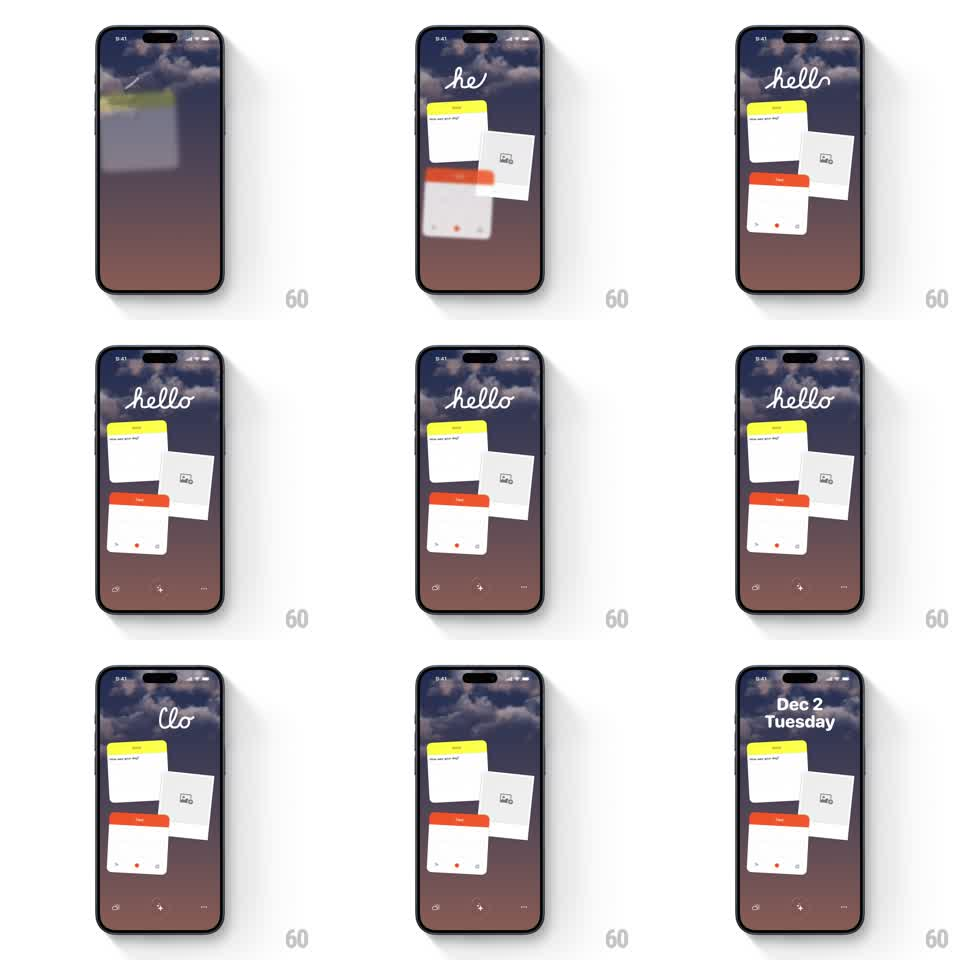

Media
Frame-by-frame

Rebuild this animation 1:1: Ben Journal's intro - a handwritten "hello" draws itself over the sunset sky while three journal widgets spring in from blurred and tiny to sharp and full-size.

Rebuild this animation 1:1: Ben Journal's intro - a handwritten "hello" draws itself over the sunset sky while three journal widgets spring in from blurred and tiny to sharp and full-size. ## Integration Integration: stack-agnostic spec - springs given as stiffness/damping, timed motions as duration + curve; map every value to your framework and animation library of choice. ## Scene Ben Journal intro over the sunset-cloud sky: a cursive "hello" handwritten at top; below, a scattered arrangement of three journal widgets - a yellow note card, a photo card, and a red-topped tape card - slightly tilted and overlapping; a minimal toolbar (audio wave, plus, dots) at the very bottom. ## Motion spec Pattern: blur-to-sharp spring widget entrance with a handwritten text reveal. - The sky fades in first (600ms). - "hello" writes itself left to right as a cursive stroke draw (900ms total, easing like real handwriting - fast on strokes, pausing at joins), with a thin pen trail. - Each widget enters blurred and small: scale 0.4 -> 1 with spring ~380/16 (a friendly overshoot) while blur 12px -> 0 over the same 400ms - the note card first, the photo card 150ms later, the tape card 150ms after that, each landing at its own slight rotation (+/-4deg). - After the entrance, "hello" plays a beat: the letters drift apart slightly and the final "o" drops a few pixels and swings (500ms) before everything settles. - The toolbar fades in last (300ms). - Idle state: the widgets float almost imperceptibly (translateY +/-3px, 3s, phase-offset per card). ## Calibration - Blur and scale resolve together - a widget is never sharp while small or blurry at full size. - The widgets' overlap order is fixed: photo behind, note left-front, tape right-front. ## Reduced motion "hello" fades in fully written; widgets fade in sharp at final size. ## Don't miss - The handwriting is a real stroke draw, not a per-letter fade. - Widgets keep their paper texture and hairline shadows through the blur.